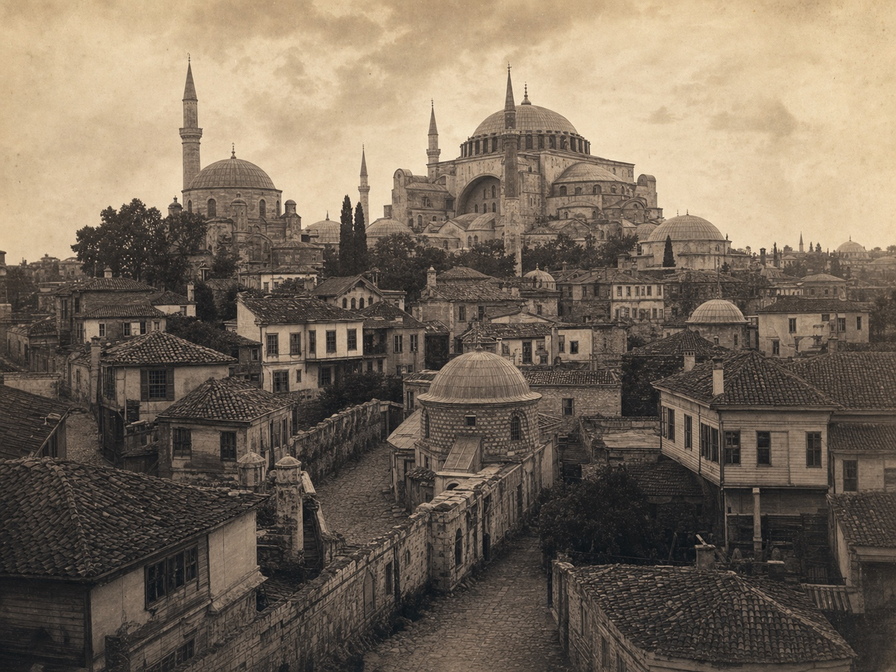

核心票券离线保存
提前购买托普卡帕宫、圣索菲亚与地下水宫票券；把二维码、预约时间和护照姓名页保存到同行人的手机中。
上海 → 伊斯坦布尔 · 2026
CONSTANTINOPLE / İSTANBUL
10 月 30 日晚抵达，11 月 2 日返程。住在塔克西姆，用两条单向路线串起帝国旧城、海峡风景与当代设计街区。
查看计划
四日行程 · THE ITINERARY
2026.10.30—11.02 · 点击任意一天展开精确时间线；点击景点名称进入专属详情页。
出发须知 · BEFORE YOU GO
提前购买托普卡帕宫、圣索菲亚与地下水宫票券；把二维码、预约时间和护照姓名页保存到同行人的手机中。
抵达后准备 Istanbulkart；保留一张可境外支付的实体卡与少量里拉现金，并下载离线地图和酒店土耳其语地址。
清真寺礼拜时段可能暂停游客进入；携带头巾或披肩和轻便雨具，出发前一周及当天早晨复核船班与天气。